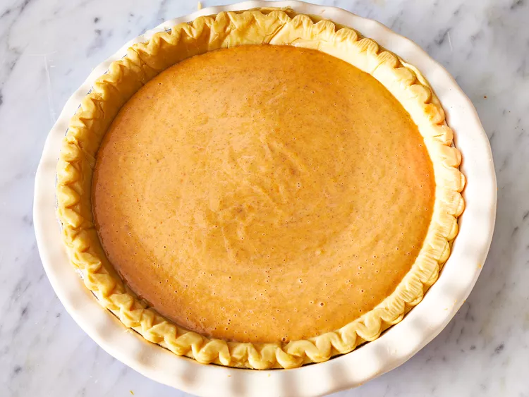

Pumpkin Pie

Description
The quintessential pumpkin pie! Perfect for a Thanksgiving feast, this approachable
dessert results in a magnificent result despite relying on canned pumpkin puree and
store-bought pie crust! Basically, you simply have to make the filling,
pour the mixture into the crust, and bake the pie! Let's go!
Ingredients
- 1 (15 ounce) can pumpkin puree
- 1 (14 counce) can Eagle Brand Sweetened Condensed Milk
- 2 large eggs
- 1 teaspoon ground cinnamon
- 1/2 teaspoon ground ginger
- 1/2 teaspoon ground nutmeg
- 1/2 teaspoon salt
- 1 (9 inch) unbaked pie crust
Steps
- Gather all ingredients
- Preheat the oven to 425 degrees F (220 degrees C)
- Whisk pumpkin puree, condensed milk, eggs, cinnamon, ginger, nutmeg,
and salt together in a medium bowl until smooth.
- Pour into crust
- Bake in the preheated oven for 15 minutes
- Reduce oven temperature to 350 degrees F (175 degrees C) and continue
baking until a knife inserted 1 inch from the crust comes out clean,
35 to 40 minutes.
- Let cool before serving.